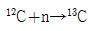
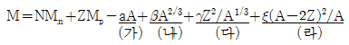
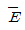
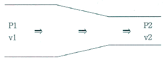
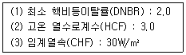
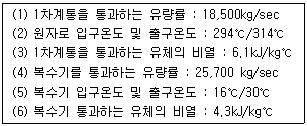
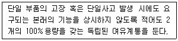
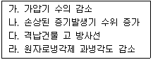

원자력기사 (2019-09-07 기출문제)
1과목: 원자력기초
1. 핵이성체 변환(Isomeric transition)에서 발생하는 감마선은 선스펙트럼을 가진다. 다음 중 이와 유사하게 선스펙트럼 방사선을 방출하는 붕괴반응은?
- 내부전환(Internal conversion)
- β+붕괴
- 전자포획(Electron capture)
- 쌍생성(Pair production)
(정답률: 알수없음)

2. 원자핵의 총 결합에너지(Total binding energy)가 가장 큰 것은?
- 4He
- 16O
- 56Fe
- 238U
(정답률: 알수없음)
3. 다음 중 경수로에서 양(+)의 반응도(Reactivity)를 주는 것은?
- 독물질 생성
- 냉각재 온도 증가
- 239Pu 생성
- 노심 내 기포 생성
(정답률: 알수없음)
4. 1mg의 235U로부터 얻을 수 있는 핵분열에너지는 최대 어느 정도인가? 단, 핵분열 당 발생에너지는 200MeV이다.
- 5.13 × 1020MeV
- 8.20 × 106J
- 5.13 × 1018MeV
- 8.20 × 104J
(정답률: 알수없음)
5. 속핵분열 인자(Fast fission factor, ε)에 대한 설명으로 옳지 않은 것은?
- 경수로와 같이 저농축 연료를 사용할 때 1.02~1.08 정도의 값을 가진다.
- 일반적으로 핵연료의 농축도에 크게 영향을 받지 않는다.
- 비균질 원자로에 대한 ε값이 균질 원자로의 ε값보다 크다.
- 감속재에 대한 우라늄의 부피비가 클수록 감소한다.
(정답률: 알수없음)
6. 1GBq의 60Co이 3반감기 동안 방출하는 베타(β) 입자는 약 몇 개인가? 단, 60Co의 반감기는 5.26년이며, 붕괴 당 한 개의 β입자를 방출한다.
- 0.3 × 1017
- 1.5 × 1017
- 2.1 × 1017
- 2.4 × 1017
(정답률: 알수없음)
7. 235U와 238U을 장전한 원자로에서의 전환비(Conversion ratio)를 바르게 나타낸 것은?
- (생성된 235U 양) ÷ (소모된 238U 양)
- (생성된 239Pu 양) ÷ (소모된 238U 양)
- (생성된 238U 양) ÷ (소모된 235U 양)
- (생성된 239Pu 양) ÷ (소모된 235U 양)
(정답률: 알수없음)
8. 노심의 축방향 중성자속 분포에 영향을 주는 것이 아닌 것은?
- 봉산수 농도
- 제어봉 위치
- 노심 수명
- 제논 분포
(정답률: 알수없음)
9. 경수로의 정상운전 중 안전성과 경제성을 위해 감속재와 핵연료의 수밀도비(Nm/Nf)를 어떻게 유지하는가?
- 최적값(유효증배계수가 최대가 되는 수밀도비)으로 유지(Optimal moderation)
- 최적값보다 매우 크게 유지(Over moderation)
- 최적값보다 약간 크게 유지(Slightly over moderation)
- 최적값보다 약간 작게 유지(Slightly under moderation)
(정답률: 알수없음)
10. 다음 중 중성미자(Neutrino)에 대한 설명으로 틀린 것은?
- 중성미자는 정지질량이 전자와 비슷하고 전하를 띠지 않는다.
- 최소한 6가지 종류의 중성미자가 있다.
- 전자 중성미자와 전자 반증성미자는 각각 β+붕괴와 β-붕괴로부터 생성된다.
- 일반적으로 전자 중성미자와 전자 반중성미자는 구분하지 않고 하나의 중성미자로 간주한다.
(정답률: 알수없음)
11. 다음 반응식에서 중성자(n)의 결합에너지(MeV)는 얼마인가? 단, Mn=1.00866amu, M(13C)=13.00335amu이다.

- 3.23MeV
- 4.95MeV
- 5.11MeV
- 6.79MeV
(정답률: 알수없음)
12. 중성자와 원자핵과의 반응에 대한 설명으로 틀린 것은?
- 대부분의 핵과 중성자 간의 반응에서 북합핵 형성은 3단계로 이뤄진다.
- 탄성사란 단면적은 입사중성자의 함수로서 3개의 다른 영역으로 나뉜다.
- 비탄성산란은 증성자가 원자핵을 첫 번째 여기상태로 만들 수 있는 충분한 에너지를 가지고 있을 때 발생한다.
- 대부분의 핵종에 대해 방사포획 단면적은 중성자 에너지가 낮은 영역에서 1/√E의 형태로 나타난다.
(정답률: 알수없음)
13. 핵융합 반응에 대한 설명으로 틀린 것은?
- 가벼운 2개의 원자핵을 결합해 적어도 1개는 반응 전 원자핵보다 무거운 원자핵을 생성시키는 반응이다.
- 대표적인 예로 D+T→α+n 반응이 있다.
- 태양에서는 H+H→D+e+반응이 일어난다.
- D+D→T+p반응 전후의 결합에너지 차이는 삼중수소와 수소원자핵의 위치에너지 합과 같다.
(정답률: 알수없음)
14. 0.0253eV의 중성자가 235U와 충돌하여 일어나는 반응은 탄성산란, 방사포획 및 핵분열 반응이며, 이들에 대한 미시적 반응단면적은 각각 9b, 99b 및 582b이다. 이 중성자가 235U에 흡수될 때, 핵분열이 발생할 상대 확률(%)은 얼마인가?
- 84.3%
- 85.5%
- 86.8%
- 98.4%
(정답률: 알수없음)
15. 어떤 고속증식로의 노심이 239Pu와 238U의 혼합 핵연료로 구성되어 있다. 이 원자로를 전출력으로 운전할 때 지수 배가시간(Exponential doubling time)은 얼마인가? 단, 239Pu의 초기 장전량은 500kg, 전출력 운전시 239Pu의 소모량은 1kg/day, 증식이득(Breeding gain)은 0.15이다.
- 0.2년
- 1.4년
- 6.3년
- 9.1년
(정답률: 알수없음)
16. 무한증배계수(k∞)를 구성하는 4인자에 대한 설명으로 틀린 것은?
- 속핵분열 인자(ε)는 열중성자 핵분열에서 생성되는 증성자수에 대한 전체 핵분열에서 생성되는 중성자수의 비로 나타낸다.
- 일정량의 중성자는 열에너지 영역에 도달하기 전에 공명영역에서 흡수되며, 공명흡수 확률(p)로 표시한다.
- 열중성자이용률(f)은 전체 흡수반응률에 대한 핵연료에서의 흡수반응률로 정의된다.
- 핵연료에 흡수되는 열중성자 1개 당 생성되는 핵분열 중성자의 평균수를 재생계수(η)로 표시한다.
(정답률: 알수없음)
17. Fick’s law(J=-D∇Φ)에 대한 설명 중 틀린 것은? 단, J:중성자류, D:확산계수, Φ: 중성자속
- 기체 확산과 유사하게 중성자 확산을 설명하기 위해 사용한다.
- 감속재 영역에 적용하면 큰 오차가 발생한다.
- 원자로 내의 중성자 흐름은 용액 내의 용질과 유사하게 거동한다.
- 중성자류의 크기는 중성자속의 차이에 비례한다.
(정답률: 알수없음)
18. 고속로에 대한 설명 중 틀린 것은?
- 감속재가 필요 없고, 증식(Breeding)이 용이하다.
- 높은 중성자에너지 영역에서는 공명흡수 구간이 서로 중첩되어 구분하기 어렵다.
- 공명영역에서 흡수반응률은 중성자 스펙트럼 Φ(E)에 의존한다.
- 안전한 운전을 위해 도플러계수(αprompt)를 양(+)이 되도록 해야 한다.
(정답률: 알수없음)
19. 다음 식은 원자핵의 결합에너지에 대한 Wiezsäcker의 반경험적 질량 공식(액적모델 또는 Liquid drop model)을 나타낸다. 이 공식에 따르면 주로 질량수가 작은 핵종들에 대해 핵자 당 결합에너지의 오차가 발생하는데, 이러한 오차를 발생시키는 데 가장 큰 영향을 주는 것은 어느 항과 관려이 있는가?

- (가) 부피(Volume) 항
- (나) 표면(Surface) 항
- (다) 쿨롱(Coulomb) 항
- (라) 대칭(Symmetry) 항
(정답률: 알수없음)
20. 중수로에 대한 설명으로 틀린 것은?
- 중수를 냉각재와 감속재로 사용하는 열증성자로이다.
- 정상운전 시 노심에서의 비등을 허용하지 않는다.
- 중수는 열중성자 흡수단면적이 매우 작아서 핵연료로 천연우라늄을 사용해도 임계에 도달할 수 있다.
- 잉여반응도가 작아 가동 중 신연료 장전을 수행한다.
(정답률: 알수없음)
2과목: 핵재료공학 및 핵연료관리
21. 가압경수로의 핵연료주기 공정에 대한 설명 중 틀린 것은?
- 정련변환: 우라늄 정광(Yellow cake) 생산
- 농축: 농축 UF6제로
- 재변환: UO2 분말 제조
- 성형가공: 핵연료 집합체 제조
(정답률: 알수없음)
22. 열중성자(Thermal neutron)를 흡수하였을 때 핵분열을 일으키는 물질(Fissile material)이 아닌 것은?
- 232Th
- 233U
- 235U
- 239Pu
(정답률: 알수없음)
23. 일반적인 핵연료 재료에 요구되는 성질이 아닌 것은?
- 핵분열성물질의 원자밀도가 높아야 한다.
- 융점은 높고 변태점은 낮아야 한다.
- 고온에서 화학적으로 안정되어야 한다.
- 열전도율이 좋고 방사선 손상이 적어야 한다.
(정답률: 알수없음)
24. 핵연료 임계도에 영향을 미치는 고유 매개변수에 해당하는 것은?
- 중성자 감속작용
- 질량
- 기하학적 구조
- 핵물질의 분포
(정답률: 알수없음)
25. 우라늄 농축공장에서 1MTU의 농축우라늄(235U의 질량비 4.8%)을 생산하기 위해 필요한 천연우라늄의 질량은?
- 6.6MTU
- 6.9MTU
- 9.2MTU
- 24MTU
(정답률: 알수없음)
26. 가압경수로 운전 중 핵연료 건전성 진단방법 중 틀린 것은?
- 지발(Delayed) 중성자 검출
- 옥소(Iodine) 방사능 분석
- 세슘(Cs) 방사능 분석
- 초음파 탐상검사
(정답률: 알수없음)
27. 원자로 냉각재 삼중수소(3H)에 대한 장해 대책 중 틀린 것은?
- 핵연료 피복재로 지르칼로이(Zircaloy) 사용
- PH 제어재 수산화리튬(LiOH) 중 6Li향량 최대화
- 삼중수소가 함유된 물이나 공기의 방출 억제
- 삼중수소 구역 출입 시 공기-호스 마스크 착용
(정답률: 알수없음)
28. 원자로냉각재가 갖추어야 할 조건으로 옳지 않은 것은?
- 낮은 중성자 흡수 단면적
- 낮은 유도 방사능
- 높은 용융온도
- 높은 비등점
(정답률: 알수없음)
29. 가압경수로형 원전 핵연료의 핵분열 과정에서 발생하는 핵분열 생성물 중 손상핵연료의 연소도 예측에 이용되는 핵종은?
- 58Co, 60Co
- 87Kr, 88Kr
- 131I, 133I
- 134Cs, 137Cs
(정답률: 알수없음)
30. 가압경수로형 원자력발전소에서 발생하는 부식반응에 대한 설명으로 가장 거리가 먼 것은?
- 1차계통 냉각재에서는 부식반응을 통해 Fe3O4가 생선된다.
- 2차계통 냉각재에서는 부식반응을 통해 Fe2O3가 생선된다.
- 고온부식에서는 중간생선물인 Fe(OH)2는 용해도가 높아 후속 부식반응을 촉진한다.
- 저온부식에서는 중간생선물인 Fe(OH)3로부터 Fe2O3가 생선된다.
(정답률: 알수없음)
31. 원자력발전소의 설계 및 운전 인자 중 사용후핵연료의 연간 발생량과 반비례하는 인자만을 묶은 것은?
- 열효율-이용률
- 전기출력-연소도
- 이용률-열효율
- 열효율-연소도
(정답률: 알수없음)
32. 원자력발전소 불활성기체(Kr, Xe 등)의 환경 배출량을 저감하기 위하여 사용할 수 있는 공정만 나열한 것은?
- 고효율입자여과기, 활성탄 여과기
- 고효율입자여과기, 활성탄 지연대
- 기체감쇠탱크, 활성탄 여과기
- 기체감쇠탱크, 활성탄 지연대
(정답률: 알수없음)
33. 중수로 DUPIC(Direct Use of spent PWR fuel In CANDU reactor) 핵연료에 대한 설명 중 틀린 것은?
- 가압경수로의 사용후핵연료를 직접 중수로 연료료 사용한다.
- 플루토늄(Pu) 또는 우라늄(U) 분리 공정이 필요하다.
- CANDU에 재사용이 충분한 핵분열성 물질을 함유하였다.
- 고연소도 중수로용 핵연료로 이용이 가능하다.
(정답률: 알수없음)
34. 가압경수로형 원자로에서 인출된 사용후핵연료 붕괴열에 대한 방출특성을 설명한 것으로 가장 거리가 먼 것은?
- 인출 직후의 붕괴열은 초기 약 10년 동안 1/100 미만으로 감소한다.
- 약 80년까지 핵분열 생성물의 붕괴열이 대부분을 차지한다.
- 약 80년까지 붕괴열은 주로 방사성 세슘, 바륨, 스트톤튬 및 이트륨의 방사성 붕괴에 기인한다.
- 인출 후 약 100년 이후에는 반감기가 긴 99Tc 및 129I의 붕괴열이 대부분을 차지한다.
(정답률: 알수없음)
35. 사용후핵연료 중간저장시설의 핵임계 안전성에 관한 설명으로 틀린 것은?
- 사용후핵연료의 초기농축도가 다양한 경우, 농축도의 다양성을 모델링하지 않고 최대 농축도를 적용하여 핵임계 안정성을 평가할 수 있다.
- 핵임계 안전성을 평가할 때, 핵연료 관련 데이터의 불확도를 고려하여야 한다.
- 고정식 중성자흡수체 또는 연소도이득을 우선 적용하여 미임계를 유지하고, 부족할 때 기하하적 배열 및 배치를 추가적으로 고려할 수 있다.
- 동시에 저장, 취급 및 운반될 수 있는 사용후핵연료 최대 수량을 가정하여 핵임계 안전성을 평가한다.
(정답률: 알수없음)
36. 가압경수로형 원자로 일차냉각재의 방사화학적 운전제한조건의 하나로 관리되는

(Average energy per disintegration)에 대한 설명으로 가장 거리가 먼 것은?- 알파 핵종은 고려하지 않는다.
- 16N(반감기 7.13초)은 고려하지 않는다.
- 131I(반감기 8.02일)은 고려한다.
- 133Xe(반감기 5.24일)은 고려한다.
(정답률: 알수없음)
37. 방사성 세슘(Cs)이 함유된 액체 방사성폐기물을 혼상이온교환수지(세슘 제염계수2)로 처리한 후 다시 양이온교환수지(세숨 제염계수 10)으로 처리할 경우, 해당 처리계통의 제염계수 및 제거효율(%)을 바르게 나열한 것은?
- 12, 80%
- 12, 95%
- 20, 80%
- 20, 95%
(정답률: 알수없음)
38. 방사성폐기물 처리의 기본 원칙 중 틀린 것은?
- 연소 및 방출
- 농축 및 저장
- 희석 및 분산
- 지연 및 붕괴
(정답률: 알수없음)
39. 액체 방사성폐기물의 처리 방법으로 가장 적합한 것은?
- 압축처리
- 원심분리법
- 해체처리
- 유리화
(정답률: 알수없음)
40. 원자력발전소에서 발생한 기체 폐기물(133Xe)의 농도를 1/100로 줄이기 위해 필요한 지연 기간은 얼마인가? 단, 133Xe의 반감기는 5.27일이다.
- 25.4일
- 35.4일
- 40.4일
- 50.4일
(정답률: 알수없음)
3과목: 발전로계통공학
41. 국내 표준형 원전의 노심운전제한치감시계통(COLSS) 및 노심보호용연산기(CPC)에 대한 설명에서 옳은 것은?
- COLSS는 핵비등이탈률(Departure from Nucleate Boiling Ratio)을 감시하며 원자로를 직접 정지시키도록 설계되어 있다.
- 중성자속 물리량 계측을 위해 COLSS는 노내중성자계측 신호를 이용하며, CPC는 노외중성자계측 신호를 이용한다.
- CPC는 2차측 열출력을 계산하여 실시간으로 감시할 수 있도록 운전원에게 제공한다.
- 핵비둥이탈 감시를 위하여 COLSS는 제어봉 위치 신호를 활용한다.
(정답률: 알수없음)
42. 가압경수로(PWR)와 비등경수로(BWR)에 대한 설명에서 옳지 않은 것은?
- 원자로정지 신호가 발생되면 PWR은 제어봉이 원자로 하부에서 상부로 삽입되고 BWR은 원자로 상부에서 하부로 자유낙하되도록 설계되어 있다.
- BWR은 터빈을 구동시킬 증기를 핵분열이 일어나고 있는 원자로 내부에서 생산한다.
- PWR은 정상운전 중 노심 내에서 포화 핵비등(Saturated nucleate boiling)을 허용하지 않는다.
- PWR은 격납건물이 있기 때문에 사고 시 방사성 기체를 수용할 공간이 BWR의 강재 격납용기에 비해 훨씬 크다.
(정답률: 알수없음)
43. 원자로냉각계통으로부터 안전주입계통으로 원자로냉각재의 역류를 방지하기 위해 설치되어 있는 기기는?
- 오리피스(Orifice)
- 벤트리(Venturi)
- 피톳튜브(Pitot tube)
- 역지밸브(Check valve)
(정답률: 알수없음)
44. 가압경수로의 원자로냉각재계통 압력제어에 사용되지 않는 기기는?
- 파일럿구동안전방출밸브(Pilot operated safety relief valve)
- 가압기살수밸브(Pressurizer spray valve)
- 가압기전열기(Pressurizer heater)
- 제어봉집합체(Control element assembly)
(정답률: 알수없음)
45. 원자로냉각재계통 내 자연순환을 형성시키기 위한 조건이 아닌 것은?
- 열원 및 열제거원 존재
- 시스템 내부 유체의 밀도 차이 존재
- 밀폐형 시스템(Closed system)
- 열제거원이 열원보다 낮은 곳에 위치
(정답률: 알수없음)
46. 아래와 같은 형상의 관로에서 유체가 화살표 방향으로 통과할 때 올바른 것은? 단, P는 압력, v는 속도를 의미하며, 밀도는 일정한 것으로 가정한다.

- P1 ＞ P2, v1 ＞ v2
- P1 ＜ P2, v1 ＞ v2
- P1 ＞ P2, v1 ＜ v2
- P1 ＜ P2, v1 ＜ v2
(정답률: 알수없음)
47. 가압경수로의 원자로냉각재계통에 연결된 부속 계통이 아닌 것은?
- 화학 및 체적제어계통(CVCS)
- 안전주입계통(SIS)
- 정지냉각계통(SCS)
- 주급수계통(MFWS)
(정답률: 알수없음)
48. 가압경수로에서 노심손상을 방지하거나 일반 공중으로의 방사성물질 누출을 최소화하기 위한 안전기능에 해당하지 않는 것은?
- 노심 반응도 및 출력제어
- 터빈 및 발전기 계통 건전성 유지
- 원자로냉각재계통 재고량 유지 및 노심 열제거
- 원자로건물 격리 및 건전성 유지
(정답률: 알수없음)
49. 가압경수로의 원자로냉각재계통 누설을 탐지하기 위한 방법이 아닌 것은?
- 원자로건물 대기입자 및 기체방사능 준위변화 감시
- 원자로냉각재계통 온도변화 감시
- 원자로건물 배수조의 수위변화 감시
- 원자로냉각재 재고량 변화 감시
(정답률: 알수없음)
50. 가압경수로의 원자로냉각재계통 건전성을 감시하기 위한 핵증기공급계통 건전성감시계통을 구성하는 하위 계통이 아닌 것은?
- 음향누설 감시계통
- 수소감시계통
- 금속파편 감시계통
- 원자로 내부진동 감시계통
(정답률: 알수없음)
51. 정상상태(Steady state)에서 원자로의 무한히 긴 원통형 핵연료에서 나타나는 반지름 방향의 전도 열전달에 대하여 바르게 설명한 것은?
- 열전달률은 핵연료 직경(a)과 피복재 두께(b)의 비(b/a)가 클수록 감소한다.
- 열전달률은 핵연료의 길이에 반비례한다.
- 열전달률은 핵연료와 피복재 표면의 온도 차이가 작을수록 크다.
- 열전달률은 피복재의 열전도계수에 반비례한다.
(정답률: 알수없음)
52. 다음 자료를 활용하여 계산한 노심 평균열속(Average heat flux)은 얼마인가?

- 3.33W/m2
- 5.00W/m2
- 6.00W/m2
- 7.50W/m2
(정답률: 알수없음)
53. 가압경수형 원자력발전소를 다음과 같은 조건에서 이상적인 랭킨사이클로 운전할 때 2차계통의 열효율은 얼마인가?

- 27.51%
- 31.45%
- 35.17%
- 64.48%
(정답률: 알수없음)
54. 지름이 3cm인 원형관에서 50℃의 물이 흐르고 있다. 물의 평균 속도가 0.2m/s일 때 레이놀즈수(Re)는? 단, 물의 밀도(ρ)는 0.98573g/cm3, 점성계수(μ)는 10-3Nㆍs/m2이다.
- 5,894
- 5,914
- 5,934
- 5,954
(정답률: 알수없음)
55. 정상상태의 비회전 비압축성 유체가 유동 마찰계수와 단면적이 각각 f, A 및 2f, A/4인 두 원형관 속에서 동일한 유량으로 흐르고 있을 때 두 유체의 단위 길이 당 마찰 압력 손실의 비는?
- 1:4
- 1:16
- 1:64
- 1:128
(정답률: 알수없음)
56. 원자력 발전소 사고 시 원자로와 유출 가능성이 있는 방사능으로부터 공중을 보호하기 위한 공학적 안전설비의 기능으로 알맞은 것은?
- 핵연료 피복재의 용융을 방지한다.
- 원자로의 격납용기 내의 대기를 최대 온도 및 압력으로 유지한다.
- 핵분열생성물 중 방사성요드 농도를 저감한다.
- 비정이 짧은 방사성 핵종이 원활하게 외부로 방출되도록 한다.
(정답률: 알수없음)
57. 열출력 3,000MW인 가압경수형 원자로에서 냉각수가 원자로 입구에서 284℃의 온도와 60×106kg/hr의 유량률로 흘러 들어가서 출구로 나올 때 단위 질량 당 엔탈피 증가량으로 알맞은 것은?
- 5×10 J/kg
- 5×102 J/kg
- 1.8×104 J/kg
- 1.8×105 J/kg
(정답률: 알수없음)
58. 가압경수형 원자로 1차 계통에 대한 설명으로 틀린 것은?
- 원자로냉각재계통은 정상운전 중 과냉각상태에서 운전되며, 이러한 과냉각상태는 증기발생기의 금수예열기에 의해 유지된다.
- 원자로냉각재펌프는 원자로냉각재계통에 강제순환유량을 제공하고 발전소 기동 중에는 원자로냉각재계통을 가열시킨다.
- 원자로압력용기는 방사선의 영향과 고온고압 상태에서 견디도록 설계되며 핵연료 집합체, 제어봉 집합체 및 내부구조물을 내장한다.
- 원자로냉각재계통은 원자로 노심에서 발생하는 열을 증기발생기를 통하여 이차계통으로 전달하는 역할을 한다.
(정답률: 알수없음)
59. 전기 출력 1,000MWe의 경수형 원자력발전소의 1년(365일) 동안 발전량이 250,000 MWd이었으며 60일의 정비(Overhaul) 기간과 30일의 연료 재장전 기간 동안 정지하였다. 이 발전소의 연간 이용률(Capacity factor)과 가동률(Availability)은?
- 이용률: 68.5%, 가동률: 75.3%
- 이용률: 68.5%, 가동률: 83.6%
- 이용률: 75.3%, 가동률: 68.5%
- 이용률: 83.6%, 가동률: 68.5%
(정답률: 알수없음)
60. 원자로 풀비등(Pool boiling) 열전달에 대한 설명으로 맞는 것은?
- 관내부로 흐르는 물이 관표면으로부터 가열될 때 나타난다.
- 핵비등 영역에서는 처음 핵비등이 시작될 때는 기포가 전체에 걸쳐 분포하다가 핵비등이 지속될수록 응축되어 기포는 가열면 근처에만 존재한다.
- 핵비등 영역에서 열유속을 더욱 증가시키면 가열면에서 발생한 기포들에 의하여 형성된 증기막이 가열면을 덮으면서 막비등(Film boiling)으로 변하고 가열면의 온도는 급격히 상승한다.
- 핵비등으로부터의 이탈 현상이 일어나는 임계열유속 이하의 핵비등에서는 열유속이 작을수록 열전달이 효율적이므로 정확한 임계열유속의 예측이 매우 중요하다.
(정답률: 알수없음)
4과목: 원자로 안전과 운전
61. 다음 중 출력계수에 포함되지 않는 것은?
- 감속재 온도계수
- 연료 온도계수
- 독물질 밀도계수
- 기포계수
(정답률: 알수없음)
62. 중대사고 현상 중 원자로냉각재계통이 감압되지 않고 고압상태로 유지된 상태에서 원자로용기가 파손되면서 고온의 노심용융물이 파편화되어 분출되는 현상은?
- 노심용융물-냉각수 반응(Fuel-Coolant Interaction : FCI)
- 고압용융물 분출(High Pressure Melt Ejection : HPME)
- 격납건물 직접가열(Direct Containment Heating : DCH)
- 노심용융물-콘크리트 반응(Molten Core-Concrete Interaction : MCCI)
(정답률: 알수없음)
63. 원자로 출력운전 중 불시정지되었다. 이때 149Sm의 농도 변화로 바르게 기술된 것은?
- 정지 후 일정 시간 동안 농도 증가 후 유지
- 정지 후 일정 시간 동안 농도 증가 후 감소
- 정지 후 일정 시간 동안 농도 감소 후 유지
- 정지와 관계없이 농도 유지
(정답률: 알수없음)
64. 다음 중 가압경수로형 원자력발전소에 장전되는 잉여반응도(Excess reactivity)에 대한 설명으로 틀린 것은?
- 노심팔기 239Pu 생성에 의한 부(-) 반응도 보상
- 원자로 출력증가 과정에서 생기는 부(-) 반응도 보상
- 핵분열 생성 독물질의 축적에 의한 부(-) 반응도 보상
- 연료 연소에 의한 부(-) 반응도 보상
(정답률: 알수없음)
65. 다음 중 출력운전 중인 원자로의 정지여유도를 확보하기 위한 방법으로 옳은 것은?
- 충분한 양의 가연성 독물질봉을 사용한다.
- 정지제어봉집합체를 일정한 높이 이상 인출한 상태로 유지한다.
- 원자로냉각재 내의 붕산 농도를 높게 유지한다.
- 독물질(Xe, Sm)의 발생량이 최대가 되도록 운전한다.
(정답률: 알수없음)
66. 다음 중 원자력발전소에서 사용하는 과냉각여유도(Sub-Cooling Margin: SCM)에 대한 설명으로 틀린 것은?
- 현재압력에서의 포화온도와 현재온도의 차이이다.
- 원자로출력이 증가하면 과냉각여유도는 증가한다.
- 과냉각여유도가 ‘0’이면 노심 내 비등이 발생된다고 판단할 수 있다.
- 가압기 온도와 노심출구, 고온관, 저온관 온도 차이로 볼 수 있다.
(정답률: 알수없음)
67. 설계기준사고 중 노심에 정반응도가 부가되어 사고 초기 출력이 증가하는 사고는?
- 원자로 냉각재 상실사고(LOCA)
- 증기발생기 튜브 과열사고(SGTR)
- 증기과잉 방출사고(ESDE)
- 급수 완전 상실사고(LOAF)
(정답률: 알수없음)
68. 일반적인 원자력발전소 원자로보호계통의 신뢰성을 향상하기 위한 설계기준 중 다음 설명에 해당하는 것은?

- 다중성(Redundance)
- 독립성(Independence)
- 다양성(Diversity)
- 동시성(Coincidence)
(정답률: 알수없음)
69. 다음 중 원자력발전소에서 대형 원자로 냉각재 상실사고(Large LOCA)가 발생하였을 때 핵연료 피복재 온도가 최대치에 도달하는 단계는?
- 방출(Blow down)
- 재충수(Refill)
- 재충전(Reflood)
- 장기재순환(Long term recirculation)
(정답률: 알수없음)
70. 다음 중 공학적 안전설비가 아닌 것은?
- 안전주입계통
- 터빈보호계통
- 격납용기 격리계통
- 보조급수계통
(정답률: 알수없음)
71. 증기발생기 튜브 파열사고(SGTR) 발생 시 나타나는 증상을 모두 고른 것은?

- 가, 나
- 나, 다
- 가, 나, 다
- 가, 나, 라
(정답률: 알수없음)
72. 기동율(SUR)이 0.5DPM일 때, 출력이 40%에서 80%로 증가되는데 걸리는 시간은?
- 약 0.6분
- 약 0.8분
- 약 1.1분
- 약 1.4분
(정답률: 알수없음)
73. 중대사고 발생 시 노심손상 중지 및 격납건물의 건전성을 유지하여 핵분열 생성물 소외방출을 최소화하기 위한 중대사고 관리단계에서 원자로용기 외벽냉각 전략을 수행하는 단계는?
- 노심손상 방지
- 노심손상 완화 및 노심용융물 억류
- 격납건물 건전성 유지
- 핵분열 소외방출 최소화
(정답률: 알수없음)
74. 가압경수로형 원자력발전소의 노심손상 완화 측면에서 비상노심냉각계통(ECCS) 설계기준에 대하여 제한치와 목적이 작못 짝지어진 것은?
- 연료피복재 표면 최대온도(≤1,204℃) - 피복재와 물의 급속한 반응 방지
- 연료 피복재 산화율(피복재 두께의 17% 이하) - 취성파괴 방지, 피복재 건전성 확보
- 수소 생성율(노심 내 전체 Zr과 물이 반응하여 생성될 수 있는 H2 가사량의 1% 이내) - 폭발성 기체에 의한 격납용기 건전성 유지
- 기하학적 형상유지 – 부가적인 노심손상 방지, 붕괴열 제거
(정답률: 알수없음)
75. 확률론적 안전성 평가(PSA) 수행 시 2단계 PSA에서 수행하는 것은?
- 발전소 계통분석, 사고경위 분석으로 노심손상빈도 계산
- 노심손상 정도, 냉각재와의 반응 정도 분석으로 원자로 파손빈도 계산
- 원자로건물 반응, 거동 분석으로 방사능방출빈도 계산
- 방사성물질의 환경누출에 따른 사고결과 평가 및 위험도 계산
(정답률: 알수없음)
76. 계획예방정비(OH)후 발전소 재기동을 위해서는 상온의 원자로냉각재를 무부하 운전온도까지 가열하여야 한다. 원자로냉각재 가열을 위해 사용하는 기기는?
- 가압기 전열기
- 원자로냉각재펌프
- 제어봉
- 정지냉각계통
(정답률: 알수없음)
77. 다음 중 후쿠시마 원전사고(2011년) 이후 대두된 후속조치 및 개선 항목이 아닌 것은?
- 중대사고 대처설비 및 대응강화
- 가동호기 Stress Test 수행
- 확률론적 안전성 평가(PSA), 주기적 안전성 평가(PSR) 등 종합감시체계 수립
- 다수호기 동시피해에 대한 대응방안 모색
(정답률: 알수없음)
78. 원자로 내 핵연료 장전량이 72 MTU 이고, 80% 출력으로 300일 운전하였을 때 연소도(Core burn up)는 얼마인가? 단, 100% 열출력: 2,825 MWth, GEN 출력: 1,040 MWe
- 약 8,825 MWD/MTU
- 약 9,018 MWD/MTU
- 약 9,237 MWD/MTU
- 약 9,417 MWD/MTU
(정답률: 알수없음)
79. 노심 반응도에 영향을 미치는 것은 여러 인자가 있다. 그 중 수 초 혹은 수 분에 거쳐 노심 반응도에 미치는 것은?
- 핵분열생성 독물질(135Xe, 149Sm)의 농도 변화
- 가연성 독물질(Burnable poison)의 연소
- 플루토늄의 축적
- 등온계수(ITC)의 변화
(정답률: 알수없음)
80. 다음 원자력발전소 안전설비 중 심층방어개념에서 그 목적이 다른 것은?
- 원자로격납건물 살수계통
- 원잘보호계통
- 원자로정지계통
- 비상노심냉각계통
(정답률: 알수없음)
5과목: 방사선이용 및 보건물리
81. 다음 중 중성자에 대한 설명으로 옳지 않은 것은?
- 중성자는 질량이 1.0087u인 소립자이다.
- 자유중성자의 평균 수명은 약 15초이다.
- 핵 밖에 있는 중성자는 불안정하여 양성자와 전자로 붕괴한다.
- 중성자는 전하가 없어 양전하를 띤 책 속에 쉽게 들어갈 수 있다.
(정답률: 알수없음)
82. 다음 중 베타붕괴에 대한 설명으로 옳지 않은 것은?
- 양전자 붕괴 전ㆍ후 궤도 전자의 수는 변하지 않는다.
- 베타붕괴 중 양전자 붕괴는 전자포획과 경쟁적으로 일어난다.
- 베타 방사선의 연속스펙트럼은 주로 페르미(Fermi) 함수에 따라 결정한다.
- 음전자 붕괴 반중성미자를 방출하며, 양전자 붕괴 시는 중성미자를 방출한다.
(정답률: 알수없음)
83. 다음 중 저지능(Stopping power)에 대한 설명으로 옳지 않은 것은?
- 저지능은 하전입자에 대해서만 정의된 개념이다.
- 물질의 저지능은 물질의 원자번호(Z)에 비례한다.
- 양성자의 경우 물의 저지능은 약 2MeV 근처에서 최대값을 가진다.
- 물에 대한 1MeV 알파입자의 질량저지능은 1MeV 양성자의 질량저지능보다 크다.
(정답률: 알수없음)
84. 다음 방사선검출기 중 검출원리가 같은 검출기로 짝지어지지 않은 것은?
- 전리함, 반도체검출기
- 섬광검출기, OSL 선량계
- 반도양자검출기, BF3RJACNFRL
- 고체비적검출기, 바이오마커
(정답률: 알수없음)
85. 다중채널분석기(MCA)를 이용하여 22Na를 분석하였을 때 나타나는 에너지 피크 중 에너지가 가장 낮은 것은?
- 소멸감마선 피크
- 이중이탈피크
- 단일이탈피크
- 콤프턴단애
(정답률: 알수없음)
86. 방사선에 의해 야기되는 변화의 양을 나타낼 때 G값(G-value)을 사용하는데, 이것은 흡수된 방사선 에너지 100eV 당 변화의 수로 정의된다. 다음 중 방사선에 의해 생성된 기단 또는 물질 중 G값이 가장 큰 것은?
- 수화전자(e-)
- 수소유리기(Hㆍ)
- H2
- H2O2
(정답률: 알수없음)
87. 주변 온도가 25℃이고 대기 압력이 75mmHg인 어떤 작업장에서, 자유공기전리함으로 조사선량률을 측정하였더니 10-3C/kgㆍhr였다. 실제 조사선량률은 약 얼마인가?
- 1.1×10-3C/kgㆍhr
- 9.1×10-3C/kgㆍhr
- 9.5×10-3C/kgㆍhr
- 1.0×10-2C/kgㆍhr
(정답률: 알수없음)
88. GM계수관으로 선원 A를 측정하여 4,800cpm을 얻었으며, 선원 B를 측정하여 3,600cpm을 얻었다. 그리고 선원 A와 B를 함께 놓고 측정하여 8,000cpm을 얻었을 때, GM계수관의 분해시간은 약 얼마인가? (단, 자연계수율은 60cpm이다)
- 250μsec
- 345μsec
- 729μsec
- 947μsec
(정답률: 알수없음)
89. 불감시간이 120μs이고, 전계수효율이 20%인 GM계수기로 0.25μCi의 32P를 계수할 때 관측계수율은 약 얼마인가?
- 1,430cps
- 1,514cps
- 1,621cps
- 2,411첸
(정답률: 알수없음)
90. 어떤 핵종의 내부전환계수가 3일 때 미 붕괴 당 방출되는 내부전환전자의 수는?
- 0.25개
- 0.33개
- 0.75개
- 3개
(정답률: 알수없음)
91. 다음 중 NaI(Tl) 무기섬광검출기에 대한 설명으로 옳지 않은 것은?
- NaI(Tl)의 Tl을 활성물질이라고 한다.
- NaI(Tl)는 발광 중심 역할을 하도록 Tl불순물을 첨가하였다.
- 방사선에 의해 여기된 충만대의 전자는 도전대로 이동하여 결합전자가 된다.
- 도전대로 이동한 전자는 Tl의 에너지 밴드와 만나면 천이하여 빛을 내게 된다.
(정답률: 알수없음)
92. 다음 중 방사선 피폭에 대한 영향이나 피해를 나타낼 때 사용하는 용어에 대한 설명으로 옳지 않은 것은?
- 손상(Damage)이란 영향 중 인체에 부정적인 것만을 말한다.
- 위해(Detriment)는 인체에 대한 보건 상의 해로운 영향을 의미한다.
- 위험(Ri나)은 확률을 포함하는 건강 상의 위해 또는 일반적인 의미의 위험을 말한다.
- 영향(Effect)는 방사선 또는 방사능으로 인해 유발되는 모든 종류의 효과를 말한다. 따라서, 영향에는 부정적인 의미뿐만 아니라 긍정적인 의미의 결과까지 포함된다.
(정답률: 알수없음)
93. 다음 중 확률론적 영향에 대한 설명으로 옳지 않은 것은?
- 영향의 발현을 우연성이 지배한다.
- 큰 무리의 세포에서 발생한다.
- 타원인 영향과 구분이 잘 안된다.
- 세포유전의 결과로 발생이 가능하다.
(정답률: 알수없음)
94. BF3 비례계수관으로 Ra-Be 선원에서 방출되는 속중성자를 측정하고자 한다. 검출기의 감도를 높이기 위한 감속재의 재질로 적절하지 않은 것은?
- 파라핀
- 납(Pb)
- 폴리에틸렌
- 수소 함량이 많은 물질
(정답률: 알수없음)
95. 고에너지 감마선이 존재하는 혼합 방사선장에서 저에너지 엑스선을 측정할 수 있는 방사선검출기는?
- Phoswich(Phoshor Sandwich) detector
- 액체섬광검출기
- ZnS(Ag) 섬광검출기
- HPGe 반도체검출기
(정답률: 알수없음)
96. 다음 중 의료상 피폭의 범주에 해당하지 않는 것은?
- 의사, 의료기사 및 간호사의 피폭
- 환자 또는 피검자로서 진료과정에서 받는 피폭
- 의학 또는 생물학적 연구를 위한 실험의 대상으로서 자원자가 받은 피폭
- 환자의 보호자가 자신이 방사선을 피폭할 것을 인지하고서 환자의 부축이나 간호 등의 사유로 불가피하게 받는 피폭
(정답률: 알수없음)
97. 감마선과 물질과의 상호작용 중 광전효과에 관한 설명으로 옳지 않은 것은?
- 광전효과는 비탄성산란이며, 선스펙트럼을 가진다.
- 광전효과 단면적은 물질의 원자번호(Z)와 광자의 에너지(E)에 따라 매우 민감하게 변한다.
- 광전효과에 의해 방출되는 광전자의 운동에너지는 입사하는 감마선의 에너지와 전자의 결합에너지를 더한 값과 같다.
- 광전효과란 입사하는 감마선이 원자의 궤도전자와 반응하여 감마선은 소멸되고 대신 하나의 전자가 그 원자로부터 튀어나오는 반응이다.
(정답률: 알수없음)
98. 다음 중 엑스선 이용시설의 차폐시설 설계에 영향을 주는 인자로 옳지 않은 것은?
- 가동인자(Work load)
- 가동율(Use factor)
- 점유도(Occupancy factor)
- 방사화(Radio-activation)
(정답률: 알수없음)
99. 시료의 계수율이 600cpm이고, 백그라운드 계수율이 60cpm일 때 총 계수시간 20분으로 최상의 결과를 얻기 위한 측정시간 배분은?
- 시료: 약 13분, 백그라운드: 약 7분
- 시료: 약 14분, 백그라운드: 약 6분
- 시료: 약 15분, 백그라운드: 약 5분
- 시료: 약 16분, 백그라운드: 약 4분
(정답률: 알수없음)
100. 원자력시설의 사고로 인근 주민이 131I을 100MBq 섭취하였다. 이 중 25%는 갑상선에 흡수되고 나머지는 소변으로 배출되었다. 131I의 유효반감기가 8일이라면, 섭취 후 5일 뒤에 남아있는 131I의 방사능은 얼마인가?
- 16.2MBq
- 32.4MBq
- 48.6MBq
- 64.8MBq
(정답률: 알수없음)